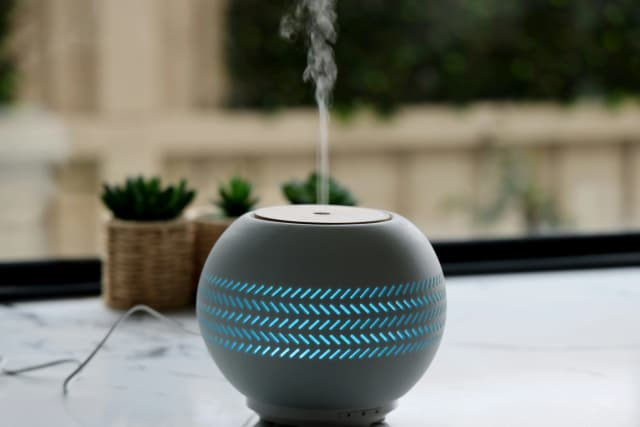

Find Products You Can Trust
Discover smart shopping
Explore today's dealsPopular Comparisons
Explore our popular comparisons across various categories
Best Laptops
Top picks include the MacBook Air M2 for speed and battery life, and Dell XPS 13 for its display and design. Lenovo ThinkPads are ideal for business use.
Best Tablets
Our most recommended Tablets for any budget, including brands like Apple, Samsung, and less-known budget friendly options.
Best Baby Monitors
Nanit and Miku provide HD video, sleep tracking, and phone alerts. Look for features like night vision and two-way talk for peace of mind.

Best Air Purifiers
Levoit and Coway offer affordable HEPA options. Dyson models add fan and heater functions. Choose one based on room size and noise level.
Best Gaming Monitors
For smooth gameplay, go with a 144Hz or higher refresh rate. ASUS and LG offer excellent models with low input lag and vivid displays.
Best Cordless Vacuums
Dyson and Shark lead in power and battery life. Look for lightweight models with good filtration and easy emptying bins.
Our Mission & Process
Our Mission Is To Make It Easy For You To Pick The Best Product And Be Confident In Your Decision
Research
We analyze products across 500+ retailers, read thousands of reviews, and track pricing daily.
Compare
Side-by-side feature analysis, price tracking, and performance testing across all major stores.
Recommend
Unbiased rankings based on value with clear explanations and best deal recommendations.